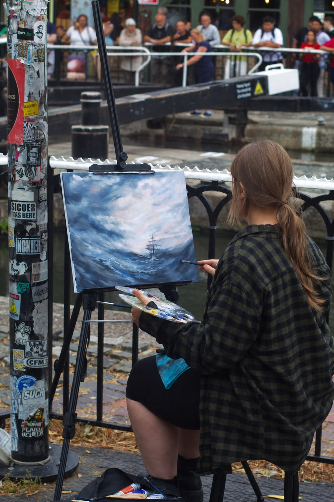
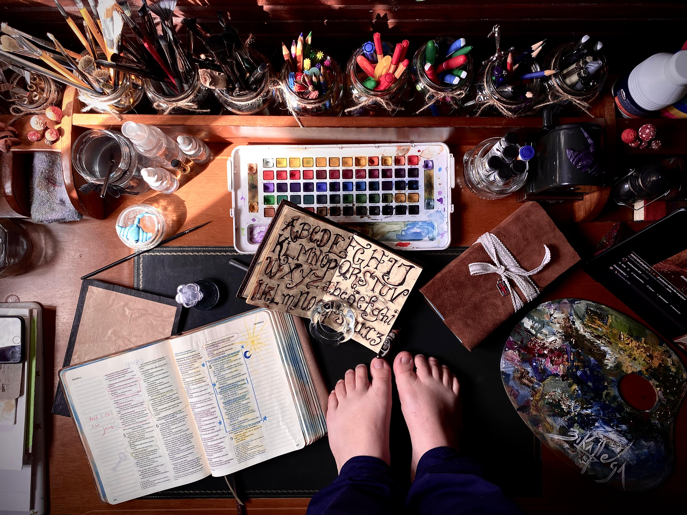

Bianca Felga
Sobre
a artista.
Pintar como uma forma de presença — diante do mundo, do outro e de si.

Eu sou a Bianca Felga, mas pode me chamar de Bika!
Não me lembro da primeira vez em que segurei um pincel. Enquanto minhas habilidades motoras ainda se desenvolviam — para comer e segurar as coisas —, o pincel já estava entre os objetos que eu aprendia a segurar. Por isso, cresci com o sentimento de que pintar é tão natural quanto comer.
Meus olhos brincalhões sempre insistiram em transformar em poesia tudo o que eu colecionava com o olhar e a maneira como a natureza dançava. Meu coração não se contentou em escolher apenas uma forma de se expressar, então decidiu tocar, sentir, dançar e pintar — expressar-se de todas as formas que eu sentia serem necessárias!
Assim como comer, todas essas formas de expressão também são uma necessidade básica para mim!

Dentro de mim existe um laboratório, o meu lugar secreto, onde eu me conheci e conheci a Deus, o meu Professor! Tudo o que estava quebrado em mim — em minhas tentativas de me conectar comigo e com o próximo — foi consertado com a tinta do amor.
Hoje, cada movimento e expressão já não nasce de uma perspectiva quebrada, mas de uma perspectiva restaurada, curada e livre.
Depois de um tempo dentro do laboratório, sendo restaurada e transformada, hoje me sinto confiante para deixar os meus pincéis dançarem no palco!
“Sejam bem-vindos ao meu laboratório, onde convido vocês a olhar para o mundo com a perspectiva dos Céus!”Ver as obras
Cada trabalho começa pela atenção ao que pede passagem.
Água, pigmento, tecido e papel guardam suas próprias memórias.
A obra se completa no olhar e na história de quem chega.